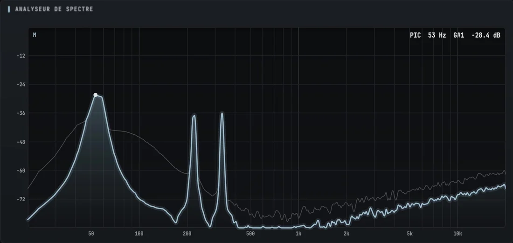
Analyseur de spectre
FFT jusqu'à 16384 points, sources L / R / Mid / Side, pondération A, maintien des crêtes, échelle log, linéaire ou ERB, courbe ou barres.
Spectre, LUFS, true peak, stéréo, oscilloscope et spectrogramme dans un seul plugin, plus une barre fine qui reste en haut de l'écran pendant que tu mixes.
Un clic sur HOTBAR et les mesures se collent en haut de l'écran, sur toute la largeur, comme la barre des tâches. Ton DAW s'arrête juste en dessous : rien n'est caché, rien ne la recouvre.
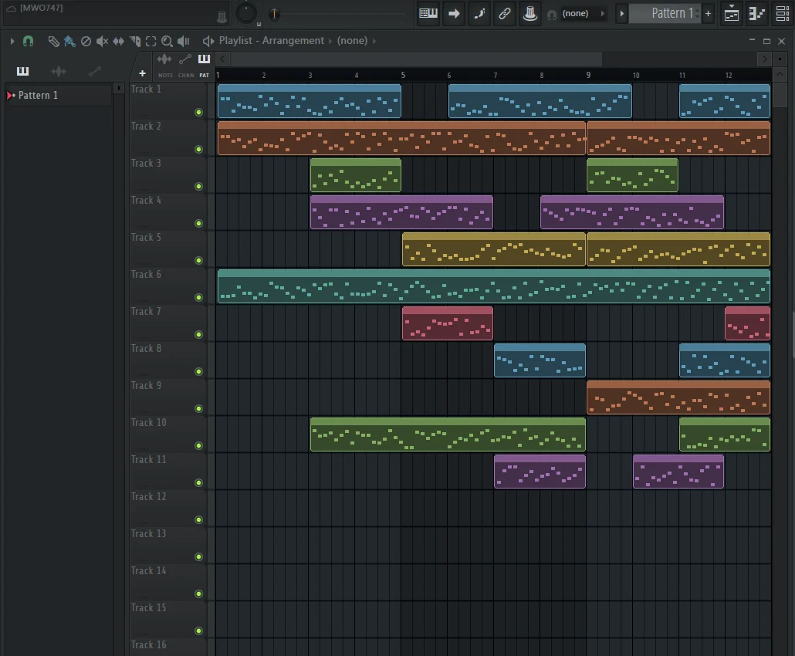
Six outils de mesure, précis et lisibles, dans une seule fenêtre.

FFT jusqu'à 16384 points, sources L / R / Mid / Side, pondération A, maintien des crêtes, échelle log, linéaire ou ERB, courbe ou barres.
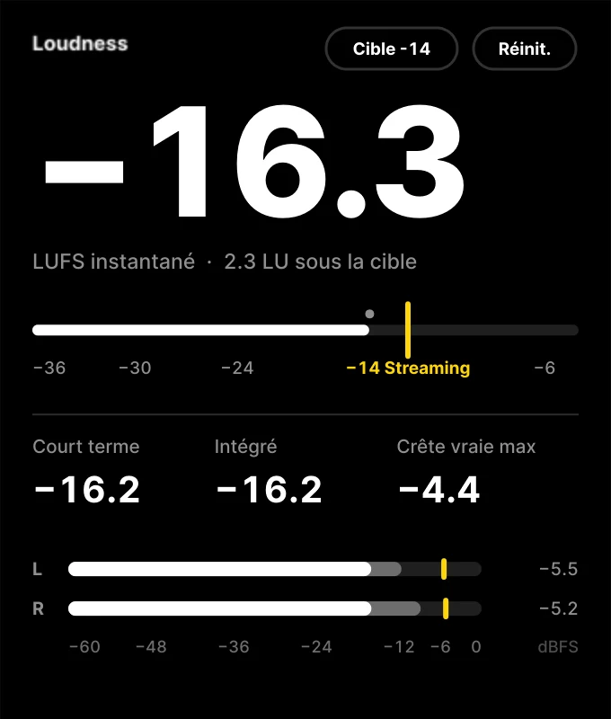
LUFS momentary, short-term et integrated (ITU-R BS.1770), true peak suréchantillonné x4, PLR, cibles streaming, club, podcast, broadcast.
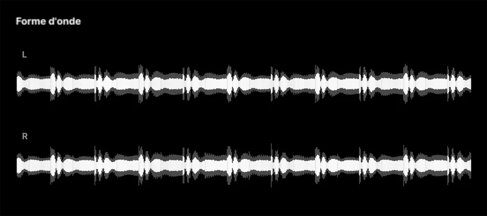
Historique défilant coloré par bande de fréquences (graves, médiums, aigus), pistes L, R, Mid ou Side, écrêtage en rouge.
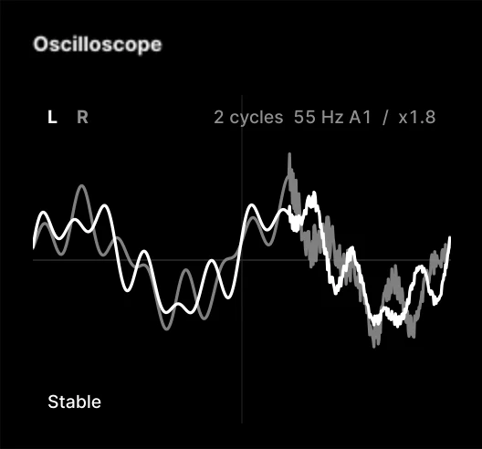
Le déclenchement suit la hauteur de la note : la forme d'onde reste immobile, avec la fréquence et la note affichées.
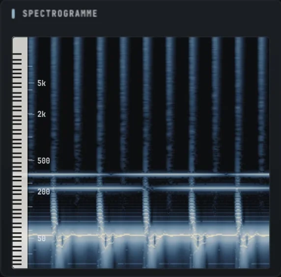
Mode net par réassignation en fréquence, clavier de piano, zoom en fréquence, réticule avec note et temps.
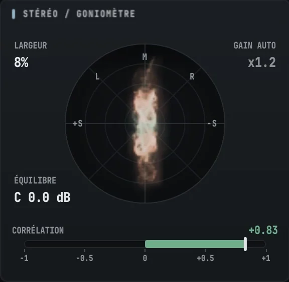
Goniomètre Lissajous ou nuage de points par bande, corrélation sur 1 ou 3 bandes, largeur, balance.
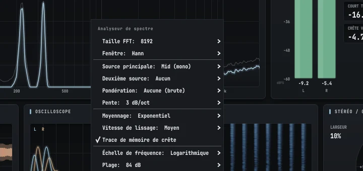
Chaque module a son menu : taille de FFT, fenêtre, sources, échelles, couleurs. Réglages mémorisés et partagés entre toutes les instances, 30 à 120 images/s, pause avec la touche P.
Des fonds neutres et une seule couleur d'accent, pour lire les mesures sans fatigue pendant les longues sessions.
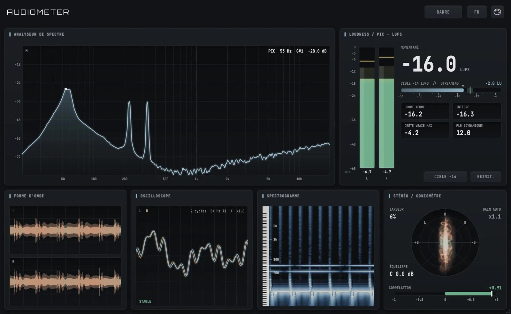
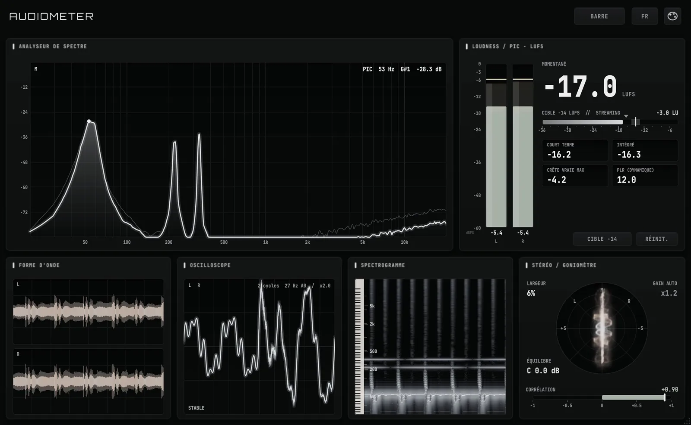
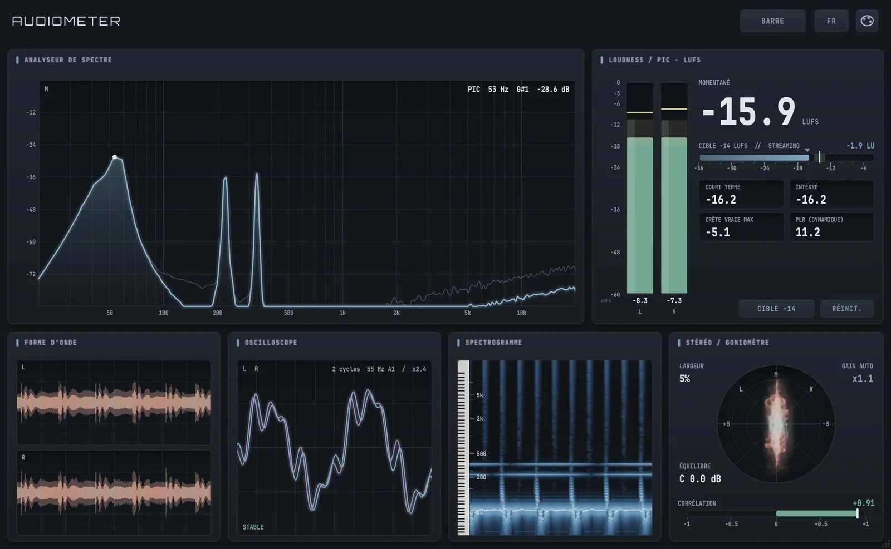
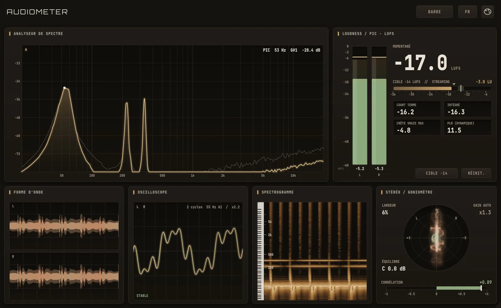
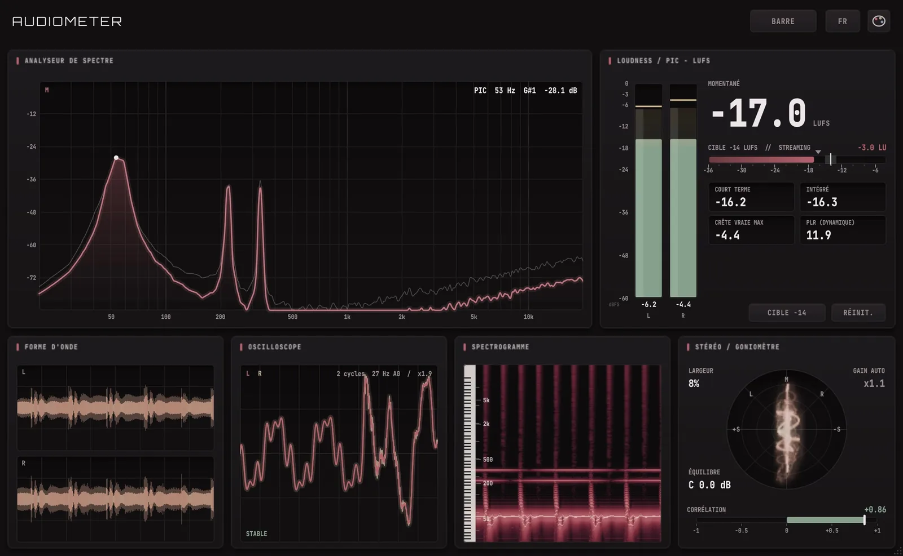
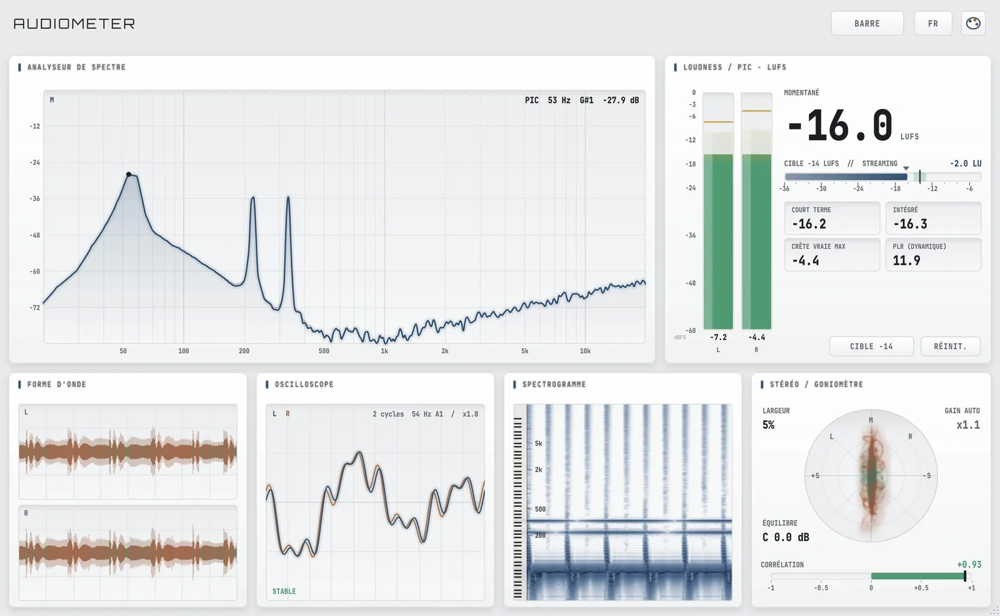
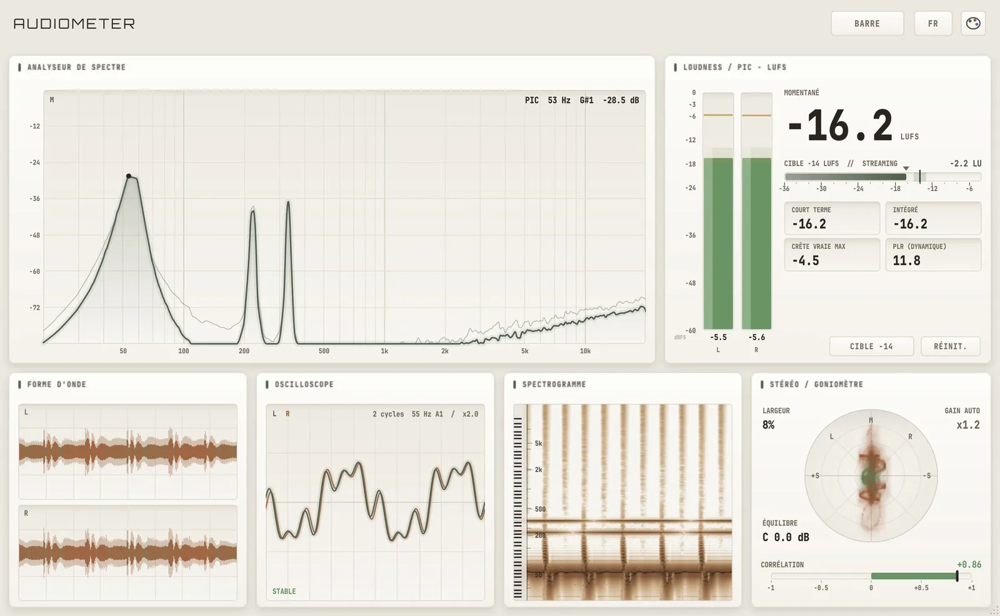
Paie une fois, garde-le pour toujours.
Paiement sécurisé par Polar (carte, PayPal selon les pays). TVA incluse selon ton pays, facture envoyée par e-mail.
Après l'achat, tu reçois une clé de licence par e-mail. Ouvre AudioMeter dans ton DAW : la fenêtre de licence s'affiche (sinon clique sur le bouton ESSAI à côté du logo), colle la clé et clique sur ACTIVER. Une connexion internet est nécessaire une seule fois.
Deux ordinateurs en même temps. Pour changer de PC, clique sur le logo AUDIOMETER du plugin puis sur « Désactiver ce PC » : la place se libère et tu peux activer la clé ailleurs.
Seulement pour l'activation. Ensuite le plugin vérifie la licence de temps en temps quand internet est disponible, et continue de fonctionner hors ligne pendant plusieurs semaines.
Tous les logiciels compatibles VST3 sur Windows : FL Studio, Ableton Live, Reaper, Cubase, Studio One, Bitwig… Place-le sur une piste ou sur le master.
Pas encore : la version actuelle est pour Windows. Essaie la version d'essai avant d'acheter pour vérifier qu'elle te convient.
Non. AudioMeter mesure le signal et le laisse passer tel quel.
Profite de l'essai gratuit de 14 jours pour tout tester avant d'acheter. En cas de problème technique, écris-nous à l'adresse ci-dessous.
C'est normal pour un petit éditeur indépendant : l'installateur n'a pas encore de signature payante. Clique sur « Informations complémentaires » puis « Exécuter quand même ». L'installateur place simplement le plugin dans le dossier VST3 de Windows.
Essaie AudioMeter gratuitement pendant 14 jours, sans carte bancaire.